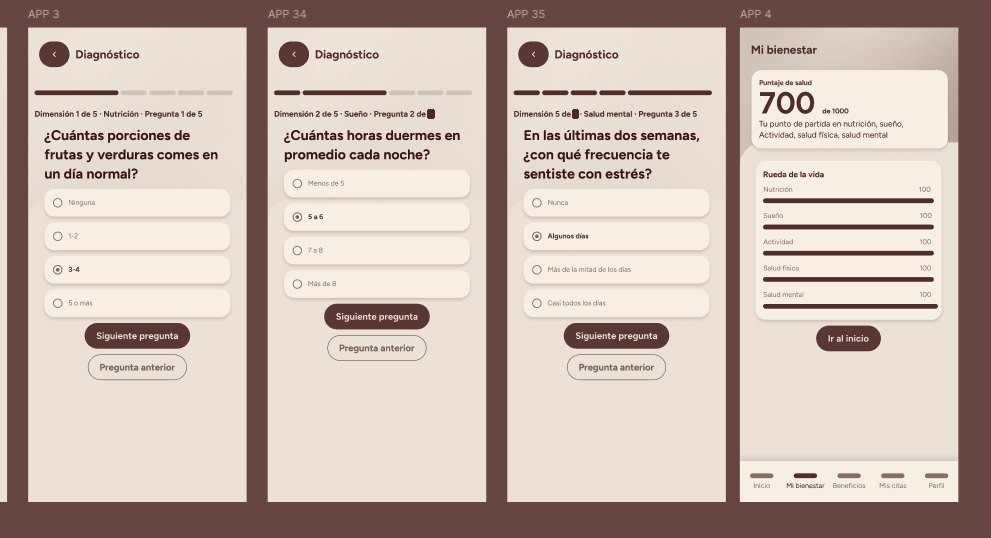
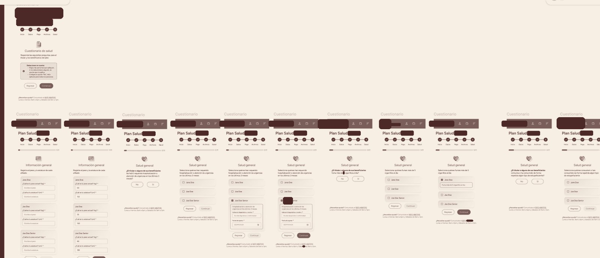
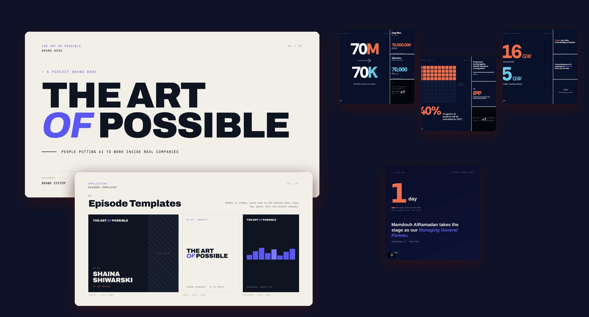

Where things get complicated,
I get curious.
Four years turning regulated, high-friction processes into flows people actually finish: insurance enrollment, health questionnaires, a 3,800-person intranet. I win arguments with evidence, not taste.
I measure work by what it changes: who gets included, what stops breaking, which decision moved. Every number here comes from a test, an inventory or a delivered artifact.
Each case follows the same spine: the context, the problem as it was handed to me, the evidence, the hard call and what actually happened, including what didn’t ship. Client names are withheld where an NDA applies.
Two vendors, one product, and the gap nobody owned
A new, fully digital preventive-health policy: web purchase, a wellness app with a health score, appointments that spend quotas, and a seam between vendors I had to make visible.
Read the case ↗
Adding friction at checkout, on purpose
In a health-plan enrollment flow, 27% of test participants thought they were done the moment they paid. They weren’t. The fix added friction at the most expensive point of the funnel, and it was adopted.
Read the case ↗
Ask once, not twenty times
A health questionnaire for policies that can cover up to 20 people. Instead of repeating every question for every person, I flipped the question, and it beat an easier-to-build alternative.
Read the case ↗
An intranet for the people who couldn’t reach it
A 3,832-person intranet untouched since 2016. The inventory showed who it left out; splitting it into a full and a light version raised coverage 44%, despite pushback over cost and security.
Read the case ↗
The podcast the founders didn’t want
Not a product case. A case about operating with no brief, no team and no metrics, directly with the founders of an AI consultancy. And about winning an argument at the top with a business case, not a design one.
Read the case ↗
Four habits that show up in every project below. They’re the reason the case studies read more like decision logs than galleries.
Design the unhappy path first
Invalid coverage, exceeded limits, a dropped connection, a failed OTP. I delivered those exception flows as their own artifact on a project where nobody had scoped them, because that’s where real users end up.
See it in the case →Bring evidence into the room
Both of my hardest calls at a large health insurer were won the same way: with test data and documented patterns from other companies, not with my opinion against a stakeholder’s.
See it in the case →Scope is a design decision
On an intranet redesign I rewrote my own objective into something measurable, then proposed a second version of the product that added cost, and brought 44% more of the company into it.
See it in the case →Write down what nobody owns
A purchase run by one vendor, daily use run by another, and six scope changes nobody filed. Writing them down turned silent design debt into decisions someone had to make.
See it in the case →- Evidence over opinion
- WCAG 2.1 A & AA from the first wireframe
- Figma · FigJam · Maze · Notion · HTML & CSS
I’m a product designer from Cali with a double degree in Interactive Media Design and International Marketing. I like the unglamorous middle of a product: the form with twenty people on it, the error state, the decision nobody wrote down.
I’ve worked inside a global consultancy on a health insurer’s digital sales, inside a pharmaceutical company’s internal communications team, and as the only marketing person at an AI startup. The common thread is the same: walk in where the process is undefined, find the people it leaves out, and leave behind documentation the team can keep using without me.
Experience
- Oct 2025 to Oct 2026Product Designer (UX/UI) · Indra GroupThree digital-sales products for a multinational health company: two plan enrollments, a health questionnaire and a new preventive-health policy.
- Apr to Sep 2026Marketing Growth Lead · XTAMBuilt the marketing function of a B2B AI consultancy from zero, reporting to the founders. Concurrent with Indra.
- Jan to Jul 2025Internal Communications & UX intern · TecnoquímicasProfessional internship on the TQNet intranet redesign.
- 2024UX/UI Designer · UX Lab, Universidad IcesiClient prototypes, usability tests and heuristic evaluations presented to stakeholders.
- 2023 to 2025Service Experience Specialist · TaskUsHigh-volume English-language support against quality standards and SLAs.
- 2022 to 2024Freelance UX/UI & brand designerResearch, prototypes, identity systems and brand manuals for emerging brands.
- 2018 to 2025BA Interactive Media Design · BA International Marketing & AdvertisingUniversidad Icesi, Cali. Two degrees, completed concurrently.